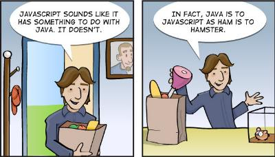
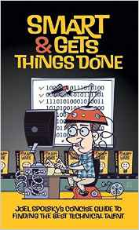
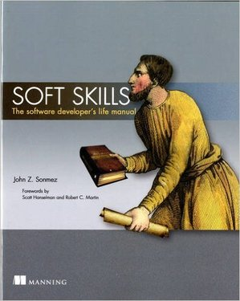

Książki dla rekrutera IT
W dzieciństwie marzyliśmy, aby zostać strażakiem, tancerką czy archeologiem - ręka do góry kto w dzieciństwie chciał zostać panią/panem z HR?
Do działu rekrutacji zazwyczaj trafia się z przypadku. Nowo zatrudnionego wrzuca się na głęboką wodę i ufa, że się nauczy się wszystkiego sam metodą prób i błędów. I rzeczywiście, większość pojmie tajniki pracy testując swoją niewiedzę na Bogu ducha winnych kandydatach.
Pojawia się pytanie: gdzie znajdziemy materiały, które dadzą nam wiedzę i narzędzia, aby awansować do pierwszej ligii specjalistów rekrutacji w branży technologicznej? Pozwolę sobie przedstawić trzy książki (jak na razie do przeczytania tylko w originale), które pomogą odnaleźć się w świecie technologii i programistów.
Niby suchar, ale zawsze aktualny. Więcej o różnicy między Javą a Javascriptem na Stackoverflow
Technology Made Simple for the Technical Recruiter by Obi Ogbanufe
Zacznijmy od książki napisanej stricte pod kątem rekrutacji IT. Autorka wyjaśnia podstawy informatyki, najpopularniejsze technologie, specjalności (od administratora, przez programistę, po business analityka) i podpowiada jak właściwie zadawać pytania, aby sprawdzić konkretne umiejętności kandydata. Książke dorwałam dwa lata temu kiedy miałam za sobą już kilka lat pracy w branży. Dla mnie bylo to świetne odświeżenie podstaw, ale równie dobrze może stać się biblią rekrutacji dla kogoś kto stawia pierwsze kroki w branży IT.
Link do książki na Amazonie: tutaj.
Smart & gets things done by Joel Spolsky
Krótka, napisana lekko, w bardzo amerykański sposób, książka autorstwa Joela Spolskiego. Joel, twórca miedzy innymi platformy pytań i odpowiedzi dla programistów StackOverflow postanowił podzielić się doświadczeniami w rekrutowaniu programistów do swojego startupu. Pomimo, że książka została wydana juz niemal 10 lat temu, prawdy w niej zawarte są ponadczasowe.
Na koniec autor proponuje system oceniania firm pod kątem jakości pisanego kodu i dogodności pracy dla programisty ("The Joel Test"). System ten można czasem spotkać w ogłoszeniach o pracę.
Książkę można kupić tutaj.
Soft Skills: The software developer's life manual by John Sonmez
Książka z zasady jest poradnikiem dla osób pragnących rozpocząć karierę programistyczną. Autor skrupulatnie wyjaśnia tajniki branży. Słuchając książki (wybrałam formę audiobooka) doszłam do wniosku, że owe wskazówki śmiało można wykorzystać w pracy rekrutera.
Autor, John Sonmez, kiedyś programista, dziś głównie konsultant i coach. Poza stroną techiczną pracy skupia się głównie na obszarze umiejętności miękkich w pracy programisty. Dużo mówi o produktywności, promuje zdrowy tryb życia, ale także sugeruje jak wykorzystać potencjał mediów społecznościowych w budowie kariery. Mało tego, porusza nawet temat związków w życiu programisty (rozdział pod znamiennym tytułem "Computers can't hold your hand"). Nawet jeśli nie zainteresują was pierwsze rozdziały głównie poświecone branży technologicznej, z pewnością znajdziecie coś dla siebie w dalszych częściach książki.
Link do książki na Amazonie: tutaj.
Co czytać?
Obserwuję rynek, sprawdzam półki w księgarniach i ciągle czekam na jakieś ciekawe polskojęzyczne wydawnictwo dotyczące naszego rynku rekrutacyjnego.
Czy znacie jakieś pozycje książkowe o tej tematyce, które moglibyście polecić?